mar 10 nov
mar 10 nov
Techno
La Platurne x Panda Events : Fenrick, Leanne, Arman Shadow
Prima volta del DJ belga Fenrick a Nizza con Leanne e Arman Shadow per la vigilia di festa.
Eventi · Costa Azzurra
Tutte le serate di Nizza, Cannes, Monaco e Antibes, raccolte e verificate ogni giorno da Teufy: 91 serate in arrivo, con locandine ufficiali, orari, prezzi e biglietti.
Popolari: TechnoHouseAfroShatta · DancehallLatino · ReggaetonRap · RnB
In diretta
Le serate di stasera e quelle in pieno svolgimento adesso.
mar 10 nov
Techno
Prima volta del DJ belga Fenrick a Nizza con Leanne e Arman Shadow per la vigilia di festa.
Nessuna serata da mostrare sulla mappa con questi filtri.
Tech House · Deep House · Electro House
Club Vivy e La Treille fanno squadra per una vigilia di festa all'insegna della house alla brasserie.
Hip Hop · RnB · Électro
Afterwork urbano 100% hip hop e R&B gratuito al Mama Shelter Nice.
Grande festa di compleanno a ingresso libero la vigilia dell'11 novembre al Mas des Escaravatiers.
Trance · Techno · House
Fenrick sbarca al Frigo 16 per una vigilia di festa hard groove e bounce.
Techno
Prima volta del DJ belga Fenrick a Nizza con Leanne e Arman Shadow per la vigilia di festa.
House · Électro
Appuntamento al Mama Shelter Nice per una serata musicale firmata Épisode Culture.
Sessione dub e bass music nel seminterrato per inaugurare la vigilia di festa.
Afro · Shatta · Hip Hop
Inaugurazione del nuovo QG della festa 21 Lounge con La Mescla Festival e BumBum06.
House · Shatta · Dancehall
Vigilia di festa con Di Liani alla consolle: house, electro, shatta e dancehall fino alle 4.
Années 2000 · Pop
Hit anni 90, 2000 e 2010 mixate da nivau.music per la vigilia di festa.
Pop
DJ set rétro dalle 23 alle 4 con ingresso gratuito per la vigilia del giorno festivo.
Électro · Pop · Club
Edizione XXL Pink & Strass all'High Club con 8 performer e scenografia immersiva.
Hard Techno · Industrial · Techno
After ufficiale dell'11 novembre dalle 5 del mattino nel tempio tekno della Vieux-Nice.
Hard Techno · Acid Techno · Techno
Appuntamento techno del giovedì a 5 euro tra L'Antre e il Kosma Club.
House
Festa universitaria dell'IUM con Francis Key alla consolle del Twiga Monte Carlo.
Tech House · Deep House · House
Sessione notturna tech house con Alex Duff fino alle 6 nel Carré d'Or di Cannes.
Afro House · House · Club
Fusione di percussioni live e clubbing chic orientale e afro house fronte mare ad Antibes.
Before underground a base di sonorità berlinesi e UK bounce nella Vieux-Nice.
Amapiano · Afro · Shatta
Serata ufficiale Afroheat Festival con DJ Mapouia, Black Q e Lil Big al 305 Vice.
Reggaeton · Latino · Club
Gran perreo e beat reggaeton in warehouse al 109 con il Jetlag Gang.
Tech House · House · Club
Atmosfera clubbing raffinata e suoni house nel cuore della zona pedonale di Nizza.
Afro House · Tech House · House
Il produttore Malive conquista il Twiga per una notte afro house e tech house.
Deep House · House · Indie
B2B house e indie dance tra Chris.A e Ugo Puccinelli al Glass Club.
Afro House · Tech House · House
Takeover del collettivo Nightly e di Dovnrobs per infiammare il club Elva a Cannes.
Afro House · House
Il produttore MALIVE supportato da Keinemusic prende il comando del Twiga Monaco.
Hard Techno · Techno
After tekno e acidcore all'alba con Pitch One della crew Trakkass.
Minimal · Techno · Tech House
Serata deep techno e tech firmata Club Bizarre e Sensoria alla brasserie nizzarda.
Électro · Pop · Indie
Il duo cult di Prayer in C in un live intimo al Mas d'Hiver.
Hard Techno · Trance · Techno
Caravel sbarca al 109 per una sessione hard bounce e techno firmata LQB.
House · Disco · Électro
Mini boiler room con il DJ al centro del club e set house, disco e pop.
Yann-S del Barrio Chicago prende il controllo della consolle per far ballare il Mourillon.
Trance · Techno · House
Serata underground melodic house e techno firmata Les Tocards al Green Musik.
House · Hip Hop · Électro
Appuntamento clubbing del sabato nella scenografia immersiva di OMA Club.
Afro House · Tech House · House
Notte del sabato house, afro house e tech house con Lizzie al Glass Club.
Acid Techno · Techno · House
After della domenica 100% vinile techno e tribe con il cofondatore di Trakkass.
Afro House · House · Rap
Day party sulla Promenade des Anglais con DJ set house e vista mare mozzafiato.
Shatta · Reggaeton · Latino
Serata latina gratuita del giovedì tra reggaeton e salsa al Mama Shelter Nice.
Tech House · Deep House · House
All-night set tech house e deep house di Alex Duff nel cuore di Cannes.
Hard Techno · Techno · Électro
Paul Seul di Casual Gabberz e Ascendant Vierge in un set esplosivo al 109.
Afro House · Tech House · House
Appuntamento house con Laurent N., Liza e DJ Safire al So Blue Antibes.
Atmosfera psichedelica e sonorità forest nel sotterraneo di L'Antre con Mouchki e Dhermo.
Hip Hop · Rap · Électro
Grande festa interuniversitaria sulla Promenade des Anglais al mitico High Club.
Tech House · Deep House · House
Serata di compleanno esclusiva al Glass Club con atmosfera house e deep house.
Live machine ibrido tekno e acidcore con Wado per l'after nella Vieux-Nice.
Concerto live reggae roots e dub di Marcus Gad sul palco del Frigo 16.
House · Disco · Électro
DJ set house e disco con Jordan Kowen al Mama Shelter, ingresso gratuito.
Techno · Acid · House
Alienduch alla console per un set energico tra house, rave e acid techno.
Hard Techno · Acid Techno
Notte acid e hard techno immersiva al Switch Club per gli amanti dei kick industriali.
Afrobeat · Shatta · Dancehall
Concept con braccialetti verdi o rossi, shatta, bouyon e rap con Sonny e Ticoq.
Trance · Techno · Club
1 anno di Fastlane al Switch con Durdenhauer alla console per una notte fast techno.
House · Hip Hop · Club
Serata clubbing hip-hop e house imperdibile del sabato sera all'OMA Club.
Melodic Techno · Techno · Tech House
Immersione melodic techno e tech house guidata da Nico.V al Glass Club.
Trance
After domenicale ad alta tensione con Bruja e Carbur tra hard trance e psytrance.
House
Day party house sul rooftop del Méridien fronte mare con tramonto e dress code blu e bianco.
House
DJ set house fronte mare sul rooftop del Meridien con dress code blu e bianco.
Pop
Tombola stravagante e performance drag animate da Lady Miss Tik al Mama Shelter Nice.
Melodic Techno · Afro House · Tech House
Il collettivo Club Sonore riunisce i giovani creativi al Mama Shelter.
Disco · Électro · Pop
Release party gratuita dalle vibe pop festose e italo-disco al Frigo 16.
Disco House · Electro House · House
Yuksek in un live intimo al Dix-Huit per il lancio delle serate NEON XP.
House · Afrobeat · Amapiano
Il punto d'incontro per gli amanti di amapiano e afrobeats con Phaphane al 109.
House · Électro · Pop
Set electro-pop e house festoso a ingresso libero al Mama Shelter con Trvchi.
Drum & Bass
Clash sonoro Bass vs Hard music tra Mr Hat e Verome nel sotterraneo della Vieux-Nice.
House
After mattutino a ritmo di UK bass e potente gangsta house con Da Grow a L'Antre.
Disco · Pop
Serata vintage festosa al ritmo delle hit cult degli anni '80 al Mas d'Hiver.
Hard Techno · Techno
Live di 2 ore del duo 23HZ con Banditik sul sound system Meyer Sound del Frigo 16.
Grande rave tekno e acidcore al 109 con Insane Teknology ai comandi.
Acid Techno · Progressive
Residency psichedelica e acid techno con Alesk, Trippy Fry e Medhra.
Hard Techno · Industrial · Trance
6 ore di set non-stop di Boticka per una notte techno industriale intensa.
Techno
After 100% vinile techno old school e tribe con DJ K-Net fino alle 9 del mattino.
Pop
Festa sfrenata e stravagante in maglione brutto di Natale con DJ set e ingresso libero al Mas.
Melodic Techno · Acid Techno · Minimal
La leggenda berlinese Acid Pauli alla console del 109 per le sessioni REF.
Afro House · Electro House · House
Edizione natalizia festosa fronte mare con La Dinette a Playa Chica Mandelieu.
Shatta · Reggaeton · Baile Funk
Showcase rap francese e hip-hop di Dakeez dal vivo al 109.
Shatta · Reggaeton · Baile Funk
Format warehouse gigante 100% reggaeton, baile funk e shatta con Mamacita.
Afro House · House · Pop
Beat elettronici e melodie orientali la domenica sera a La Suite.
Électro · Pop · Indie
Gli autori della hit Hey You dal vivo al Stockfish a tariffa studenti.
Techno · Dancehall · Hip Hop
Brodinski unisce techno e hip-hop al Frigo 16 con Tobhi TM e Lariate Club.
Dancehall
I pionieri scozzesi del sound system dub Mungo's Hi Fi dal vivo al Frigo 16.
Électro
Notte alternativa darkwave e post-punk fino alle 3 del mattino allo Studio 13 a Cannes!
Électro
DJ Click porta i suoi bassi electro allo Stockfish per una serata universitaria originale!
Afro House · House · Électro
Il DJ resident di Ibiza Ben Carter infiamma Le Dix-Huit in sessione NEON XP.
Disco House · House · Funk
Pista roller indoor gigante e gratuita e dancefloor disco al Frigo 16.
Hip Hop · Rap · Pop
Serata pre-vacanze con la scena urban emergente di Le Mome e Adamé.
Melodic Techno · Afro House · Tech House
Day party di opening sulle piste ad Auron con la crew Coachellito.
Shatta · Reggaeton · Baile Funk
Corso di salsa alle 20 poi notte clubbing perreo e dembow non-stop fino alle 2.
Afro House · Tech House · House
Serata di Natale della crew Sud'Spicious sul sound system VOID del Glass Club.
Nessuna serata corrisponde a questi filtri.
Chi siamo
Teufy è la guida delle serate in Costa Azzurra. Ogni giorno il nostro team e i nostri strumenti esplorano le biglietterie (Shotgun, DICE, Resident Advisor, Weezevent…), i siti dei club, i calendari delle città e i profili degli organizzatori per riunire tutte le serate da Nizza a Monaco, senza doppioni, con la locandina ufficiale, l’orario, il prezzo e il link dei biglietti.
Sul campo
Festival, club, serate a tema, yacht del Gran Premio: Junior e il team sono dove succede la notte.
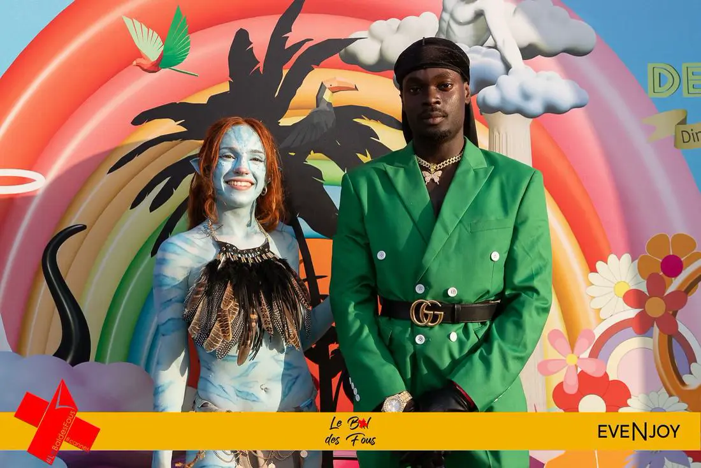
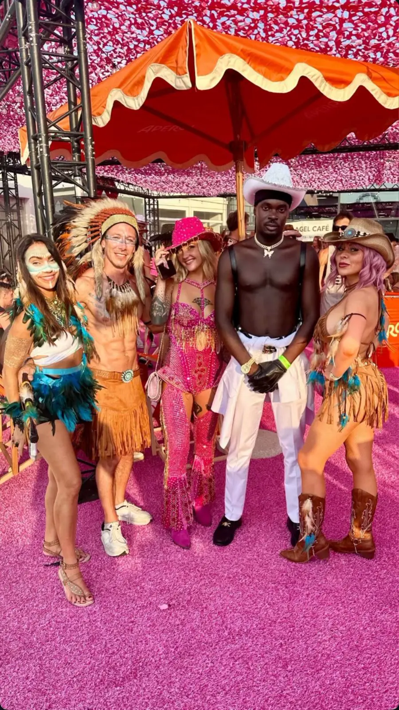
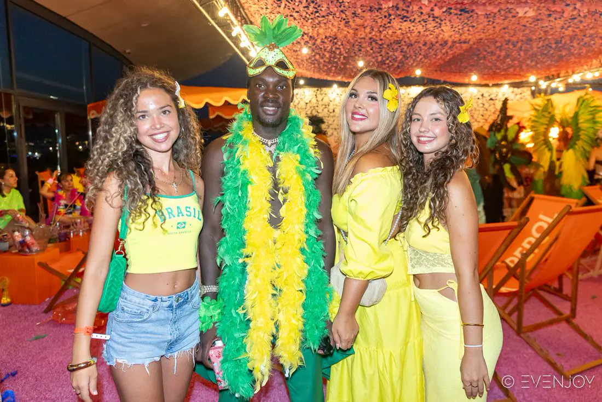
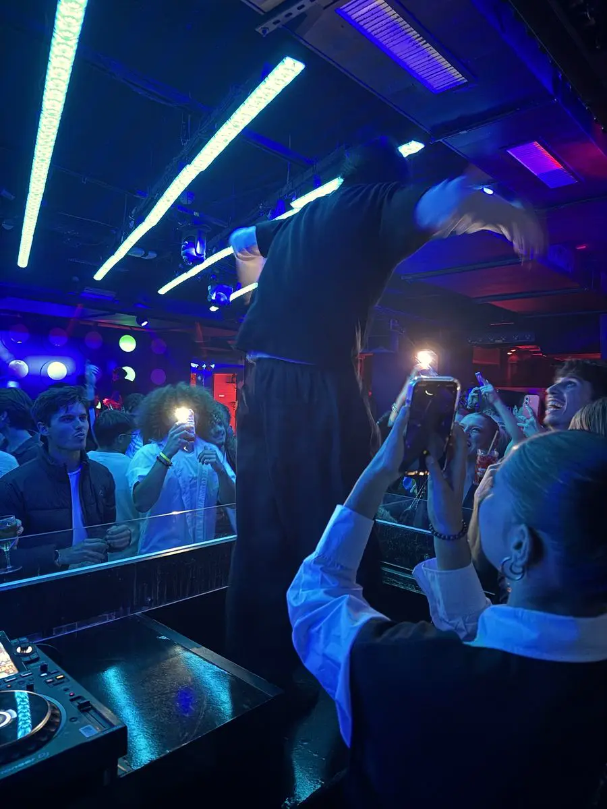
Partner
Club, bar, beach club, organizzatori, collettivi, festival e artisti lavorano con Teufy ogni giorno.
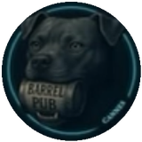
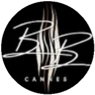
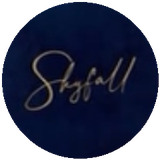
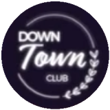
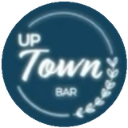
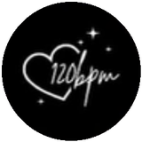
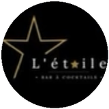
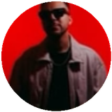
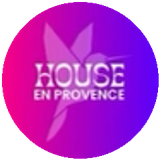
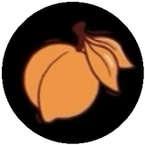
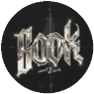
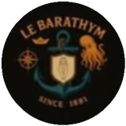
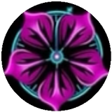
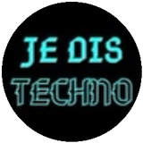
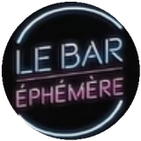
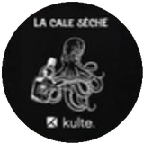
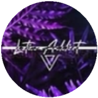
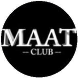
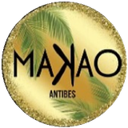
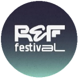
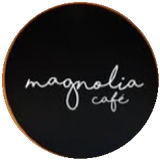
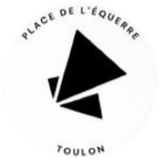
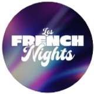
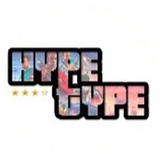
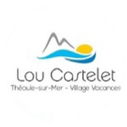
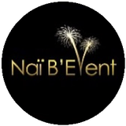
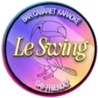

E molti altri!
Ogni giorno Teufy consulta le biglietterie (Shotgun, DICE, Resident Advisor, Weezevent…), i siti dei club, i calendari delle città e i profili degli organizzatori, elimina i doppioni e verifica ogni serata sulla sua pagina ufficiale.
No: il pulsante «Biglietti» ti porta direttamente alla biglietteria ufficiale, senza commissioni. Se la serata è in vendita su più siti, Teufy confronta i prezzi.
Scrivi lo stile nella ricerca o usa i filtri. Ogni stile ha anche la sua pagina: techno, house, afro, shatta, latino, rap.
Invia locandina, data e link dei biglietti a @teufy_official su Instagram: la verifichiamo e la aggiungiamo gratis.
Organizzatori
Mandaci la locandina, la data e il link dei biglietti su Instagram: la aggiungiamo alla guida e, se piace ai 17-30enni della Costa, la mettiamo in evidenza.


![Locandina: Do You Like... Tekno ? @ Frigo16 - Le 109 [Nice]](../site/affiches/adc3b9e88dc7-800.webp)